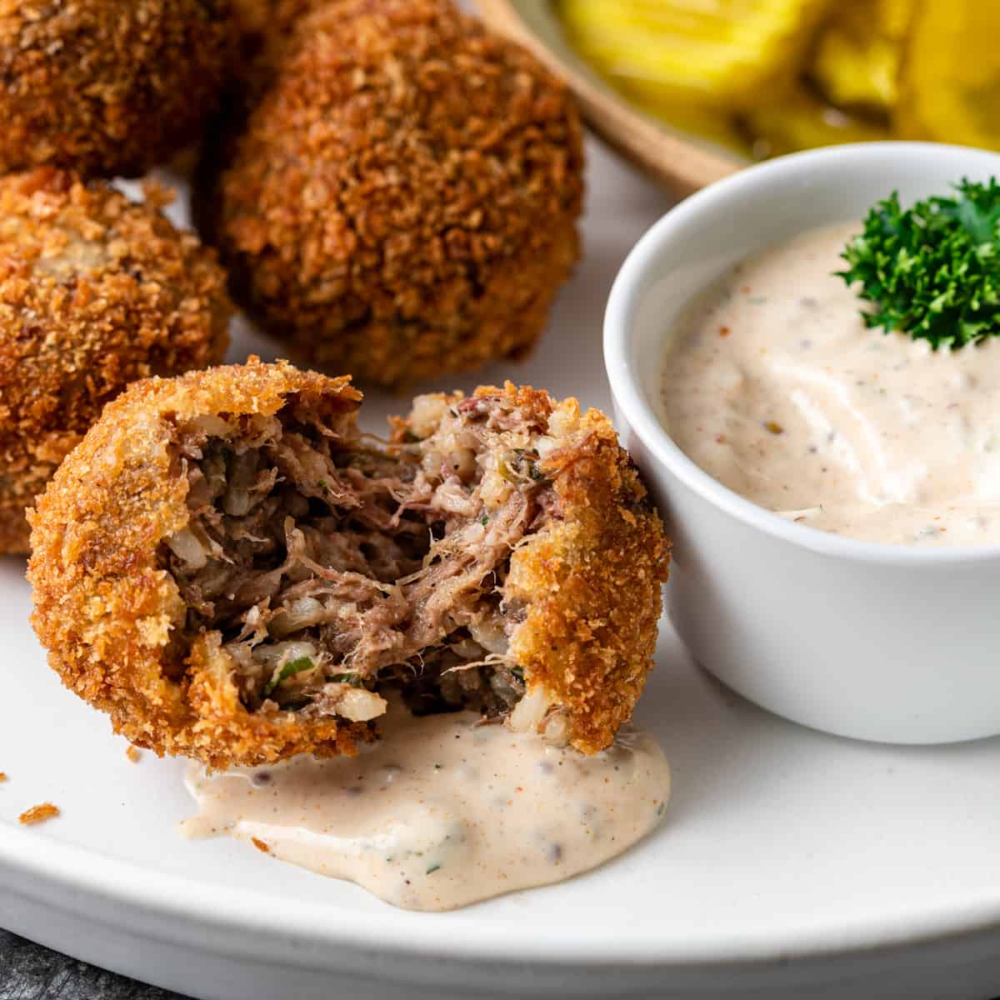
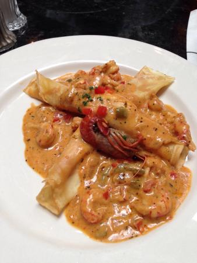

Item |
Image |
Description |
Price |
|---|---|---|---|
Boudin Balls |
 | Pork Sausage made with rice and seasoning that is usually stuffed into a casing. These delicious treats are rolled into balls and deep fried to perfection. | $12.99 |
Crawfish Goat Cheese Crepes |
 | These delicious crepes are filled with a creamy sauce with Cajun crawfish and local goat cheese. | $14.99 |
Gumbo |
This traditional Louisiana soup includes andouille sausage, chicken and crab. It is served with a sponful of rice. | $10.99 |